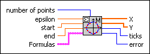

Eval X-Y(t) Optimal Step VI
Owning Palette: 1D & 2D Evaluation VIs
Requires: Full Development System
Calculates the coordinates of a curve by calculating function values of x = f(t) and y = g(t), where t runs over an interval.
This VI produces more accurate output values than the Eval X-Y(t) VI.

 Add to the block diagram Add to the block diagram |
 Find on the palette Find on the palette |